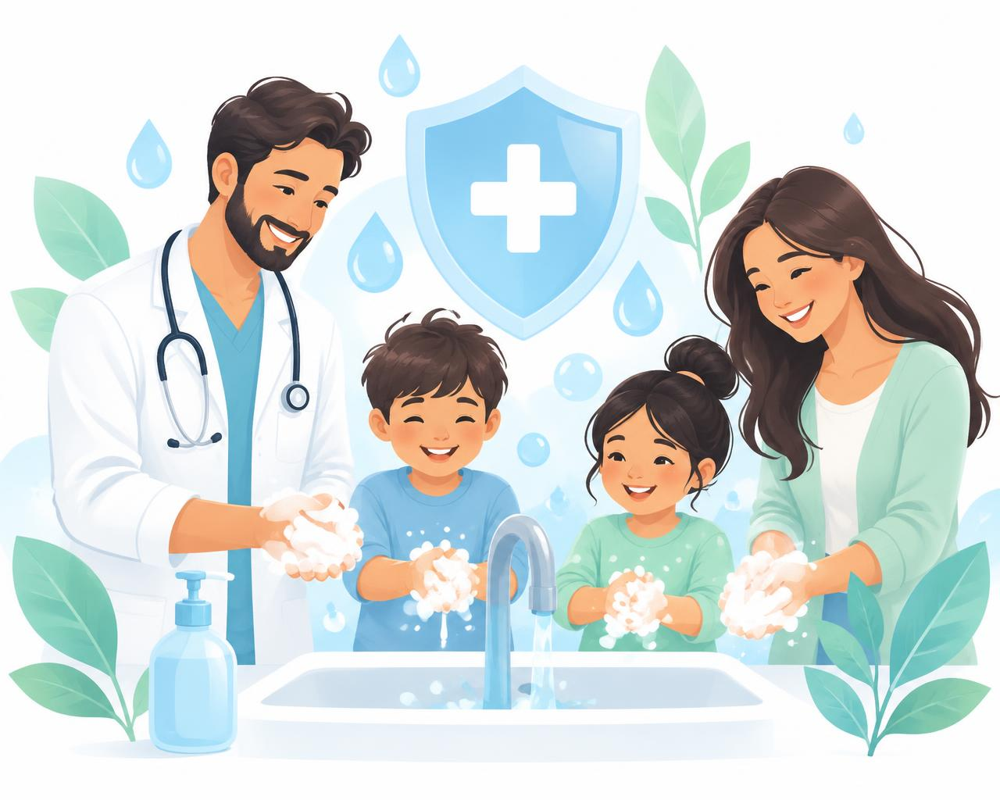
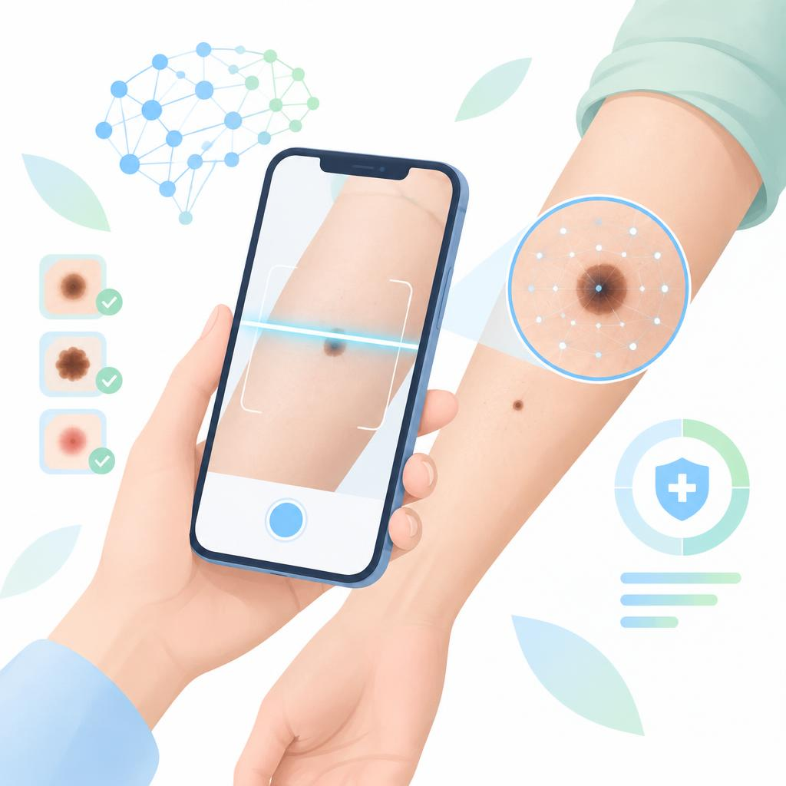
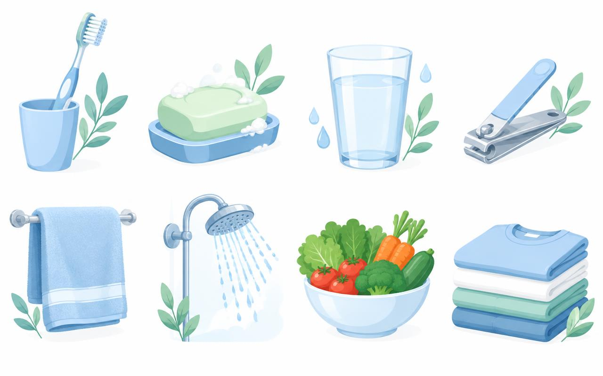

fewer diarrhoeal illnesses in communities taught handwashing
Source: CDC HEALTHY HYGIENE, HEALTHY LIFE
Poor Hygiene and Its Effects on Human Health
Everyday habits like handwashing, clean water and safe food protect us from many infections. HygieneCare explains which diseases are linked to poor hygiene, how they spread and how simple habits can prevent them.
✓ WHO / CDC / NHS sourced•12 conditions explained

WHY IT MATTERS
Small habits, big health impact
Personal hygiene is the set of daily practices that keep our body and surroundings clean. It is one of the cheapest and most effective ways to stop germs from spreading.
and sanitation prevent cholera, typhoid and hepatitis A
Source: WHObrushing with fluoride toothpaste helps prevent tooth decay
Source: WHODISEASES
Know the diseases, stop the spread
Causes, symptoms, transmission and prevention – explained accurately and simply.
AI-ASSISTED SCREENING
Open AI Skin Scanner →
AI Skin Disease Scanner
Upload or capture a photo of a skin concern and get an educational screening summary – possible condition, common symptoms, precautions and when to see a dermatologist.
- Upload from gallery or use your camera
- Preview your selected image in your browser
- Know when to seek professional advice
Important: This screening provides educational information only and does not diagnose scin conditions.

⌕
Skin concern checkerEducational screening - Your photo is processed securely
Private preview⏳ Checking...
Your photo is sent to Hugging Face AI for educational screening.
PREVENTION
Four habits to start today
Simple routines can make a meaningful difference to your health and the health of your community.

Wash hands
20 seconds with soap, before eating and after the toilet.
Drink clean water
Boil, filter or treat water from uncertain sources.
Eat hygienic food
Fresh, hot, well-cooked food and washed produce.
Bathe daily
Keep skin clean and dry, especially skin folds.
PRECAUTIONS
Make hygiene part of your routine
Protect yourself and others with small, consistent steps at home, school and in your community.
Test your knowledge →Keep your surroundings clean
Dispose of waste safely and prevent stagnant water from collecting.
Use safe toilets and sanitation
Use a clean toilet and wash hands with soap afterwards.
Do not share personal items
Avoid sharing towels, razors, toothbrushes and combs.
Seek care when symptoms persist
Get medical advice for severe, worsening or persistent symptoms.
HEALTH AWARENESS QUIZ
How hygiene-smart are you?
Take this 10-question quiz and see what you know about everyday hygiene.
QUESTION 1 OF 10Score: 0
Choose the best answer.
ABOUT HYGIENECARE
Knowledge today. Healthier tomorrows.
HygieneCare is a student health-awareness project about poor hygiene and its effects on human health. Our goal is to make reliable hygiene information easier to understand and put into practice.
Educational content only – not medical advice.
Learn. Practice. Prevent.
Explore common hygiene-related conditions, learn prevention habits and test your knowledge.
Explore the diseases →